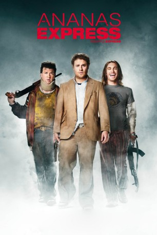

#1583 Ananas Express
Alternativ: Pineapple Express
 
 IMDB-Wertung: 7.0 / 10
IMDB-Wertung: 7.0 / 10  Metascore: 64
Metascore: 64 
Als dem dauerbekifften Dale mitten in der Nacht der Stoff ausgeht, macht er sich auf den Weg zu seinem Dealer Saul. Der hat was ganz Besonderes für ihn parat: eine Neuzüchtung namens „Ananas Express“. Doch ehe Dale in den Genuss kommt, wird er zufällig Zeuge eines Mafia-Mordes, in den eine korrupte Polizistin und der städtische Drogenboss verwickelt sind. Bei seiner panischen Flucht lässt er dummerweise einen Joint mit Ananas Express am Tatort zurück, was ihn und seinen Dealer ganz oben auf die Abschussliste der Gangster bringt. Auf der wilden Flucht vor dem Mob wird den beiden Kiffern schnell klar, dass sie nicht an Gras-bedingter Paranoia leiden, sondern wahrlich Grund zur Sorge um ihr Leben haben…
Jahr: 2008
Dauer: 111 Minuten
FSK: 16
Land: USA Studio: Columbia PicturesTonspuren: DD5.1 - ,
Untertitel: Deutsch,
Auflösung: 1080p (1920x800) Größe: 8970 MB
Genre: Action, Komödie, Krimi
Regisseur: David Gordon Green
Drehbuch: Seth Rogen, Evan Goldberg, Judd Apatow, Seth Rogen, Evan Goldberg
Soundtrack: Graeme Revell
Darsteller:
 Seth Rogen als Dale Denton
Seth Rogen als Dale Denton James Franco als Saul Silver
James Franco als Saul Silver Danny McBride als Red
Danny McBride als Red Kevin Corrigan als Budlofsky
Kevin Corrigan als Budlofsky Craig Robinson als Matheson
Craig Robinson als Matheson Gary Cole als Ted Jones
Gary Cole als Ted Jones Rosie Perez als Carol / Female Cop
Rosie Perez als Carol / Female Cop Ed Begley Jr. als Robert
Ed Begley Jr. als Robert Nora Dunn als Shannon
Nora Dunn als Shannon Amber Heard als Angie Anderson
Amber Heard als Angie Anderson Joe Lo Truglio als Mr. Edwards
Joe Lo Truglio als Mr. Edwards- Arthur Napiontek als Clark
 Cleo King als Police Liaison Officer
Cleo King als Police Liaison Officer Bill Hader als Private Miller
Bill Hader als Private Miller James Remar als General Bratt
James Remar als General Bratt- Jonathan Spencer als Scientist
 Dana Lee als Cheung
Dana Lee als Cheung Bobby Lee als Bobby
Bobby Lee als Bobby Ken Jeong als Ken
Ken Jeong als Ken Connie Sawyer als Faye Belogus
Connie Sawyer als Faye Belogus- David McDivitt als Cop with Mole
- John Robert Tramutola als Walt
 Jeannetta Arnette als Sandra Danby
Jeannetta Arnette als Sandra Danby- Carlos Aleman als Guy in Car
 Omar Leyva als Guy in Car #2
Omar Leyva als Guy in Car #2- Sam Carson als Xerox Secretary
 Jack Kehler als Walter - Accountant
Jack Kehler als Walter - Accountant Robert Longstreet als Dr. Terrence
Robert Longstreet als Dr. Terrence- Peter Gray Lewis als Peter - Thug #1
 Steve Bannos als Jared - Thug #2
Steve Bannos als Jared - Thug #2 Eddie Rouse als Lance - Thug #5
Eddie Rouse als Lance - Thug #5- Brian Scannell als Thug #4
- Ricky Dominguez als School Guy #1 , uncredited
 Troy Gentile als Troy , uncredited
Troy Gentile als Troy , uncredited- Jourdan Lee als Assassin #1 , uncredited
- Nathan Mussell als Paramedic , uncredited
- Jill Sayre als , uncredited
- Sheila Shaw als Waitress , uncredited
 George F. Watson als Gov't Scientist B.O.N.G. Inventor / Diving Suit Attendant , uncredited
George F. Watson als Gov't Scientist B.O.N.G. Inventor / Diving Suit Attendant , uncredited- David C. Cook als Chris Gebert
- Howard S. Lefstein als Mark
- Mae LaBorde als Mrs. Mendelson
- Kendall Carly Browne als Old Woman
- George Lew als Old Man
- Adam Crosby als Ack
- Andrew Heald als Blake
- Mark Whigham als Thug #3
- Gabe Fiscale als Tennis Pro , uncredited
- Brandon G. Holley als High School Student , uncredited
- Ian Novotny als 1930's Scientist , uncredited
Datei: X:\2008(A-F)\Ananas Express (2008, FSK16, 1920x800).mkv seit 23.07.2015
Festplatte: HD 2007(A-Z)-2008(A-F)
 Es gibt insgesamt 66 Filme in der Gruppe '2008(A-F)'
Es gibt insgesamt 66 Filme in der Gruppe '2008(A-F)'